Un-Muted
A concept campaign for Desigual, built end to end with generative AI workflows.
Unofficial concept. It is not made for, or affiliated with, Desigual. Every person shown is AI-generated.
Does inclusion have to shrink because your target age did?
Desigual moved toward a bold, younger audience. That made me ask: can a brand stay bold and young, and still show that its clothes work for everybody, at any age and body type?
That question became the concept: Un-Muted. Wear who you want to be. It is not a pitch to win back an old customer. It is a test of whether inclusive representation and a bold current direction can live in the same campaign.
And it is a demonstration: what an in-house team could build with generative AI, in a short time, without expensive risks.
Workflow 1: a repeatable image campaign.
One set-up, then a full campaign set in a single batch. The key is a locked character, so the same person appears in every shot.
Character brief
Describe the model in detail: age, expression, energy, natural imperfections. An AI assistant writes the brief and the first reference photo follows.
Multi-angle lock
A 12-panel reference grid locks her face and proportions across every angle.
Shot list and outfit
Five shot types: studio, lifestyle, macro, interaction, environmental. The outfit is attached as a separate reference.
Generate
Character, outfit and shot list run together, and a full set comes out in one pass.
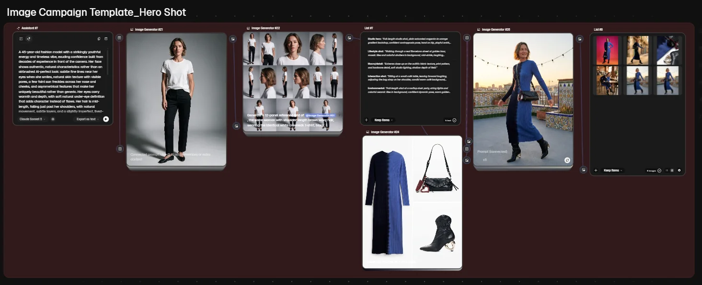
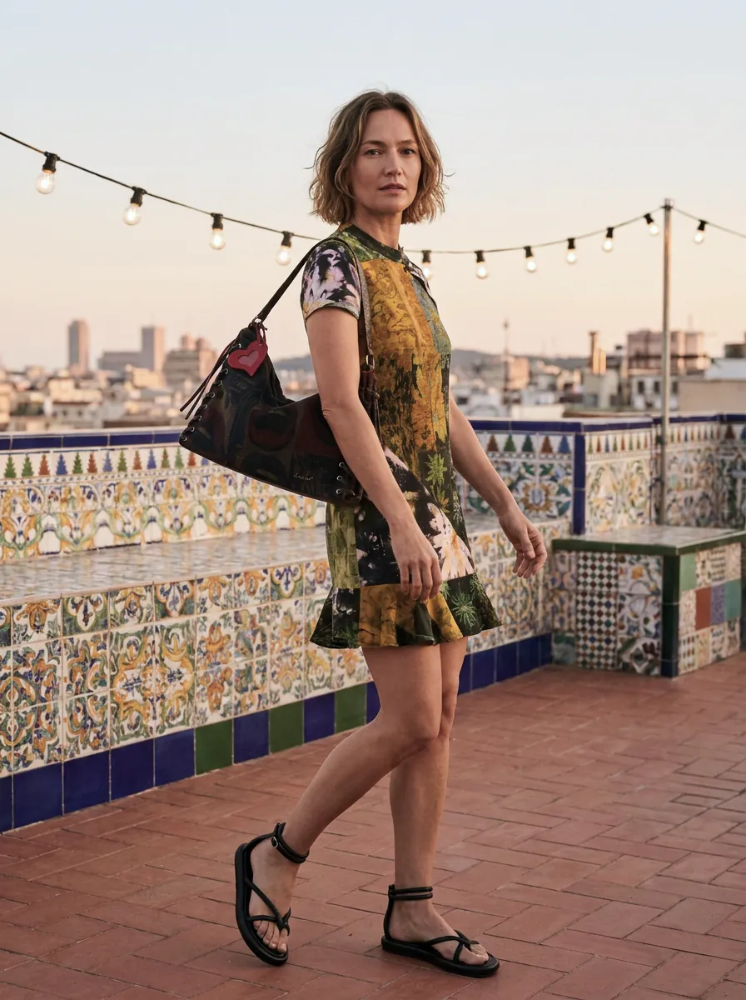
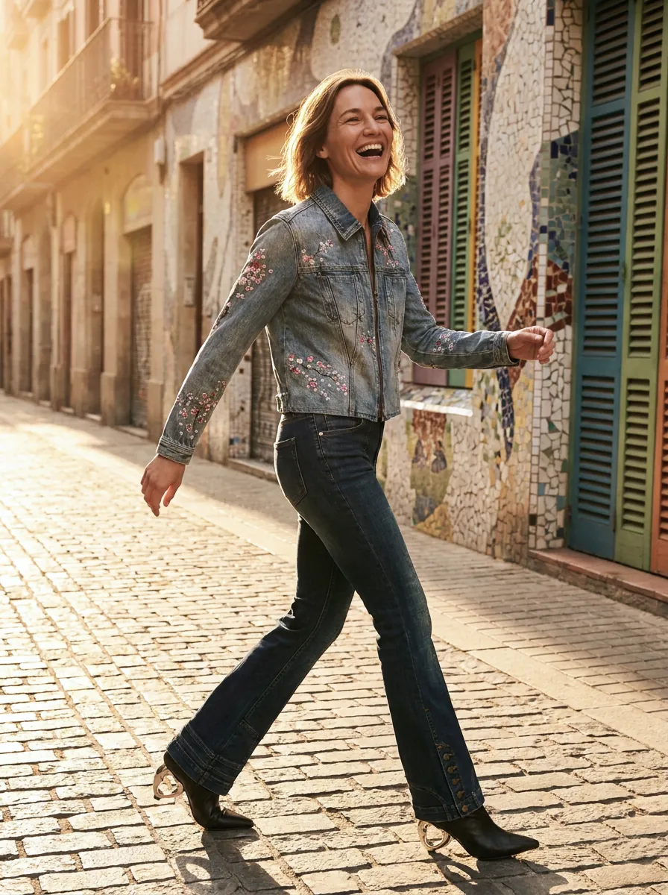
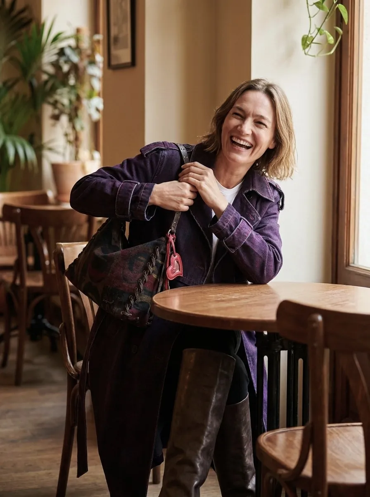
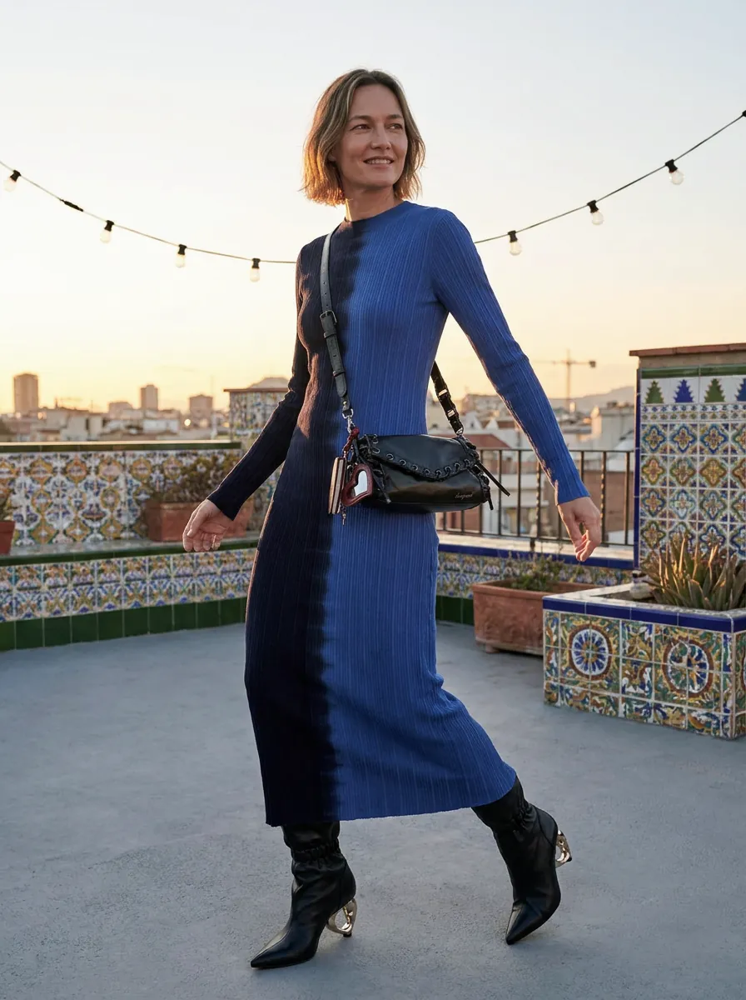
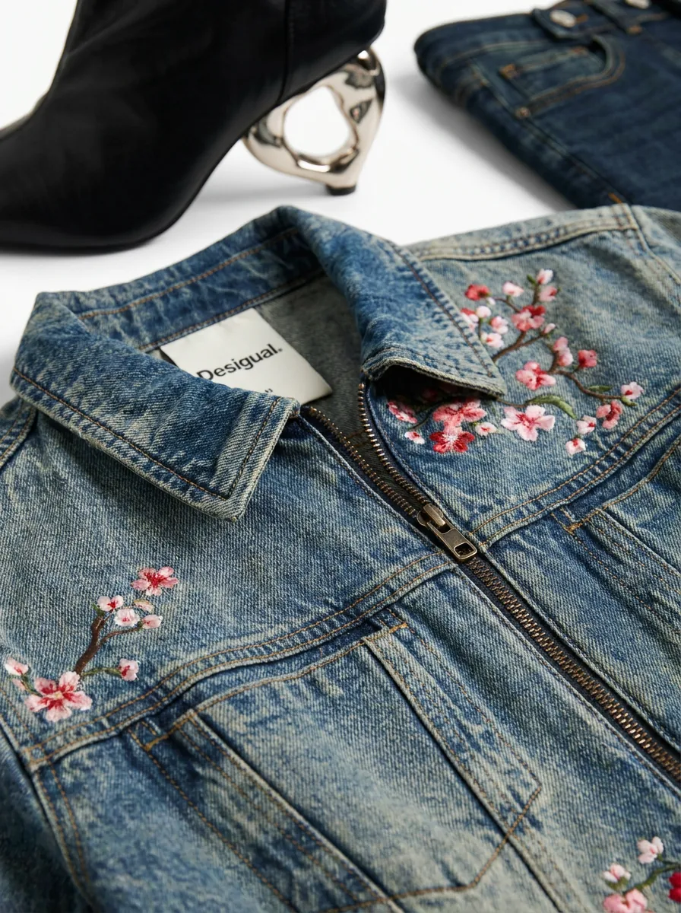
Same woman, five different shots. All images are AI-generated.
Workflow 2: from stills to film.
The film, "You've been on mute," starts on a muted video call and ends on a bold, colourful woman who is no longer silent. A voiceover and a phone-ring sound effect were made in the same workspace.
Prepare the shots
Generate the campaign shots first, locked and ready for video.
Animate each shot
Use the video generator for each still. I set the start frame, model and length per shot.
Cut the film
I assembled the cut in Video Project Editor, chosen over Video Combiner for finer control of sequence and transitions.
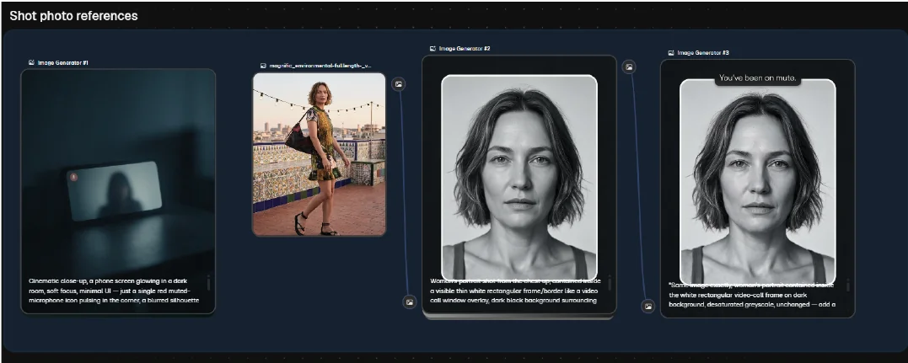
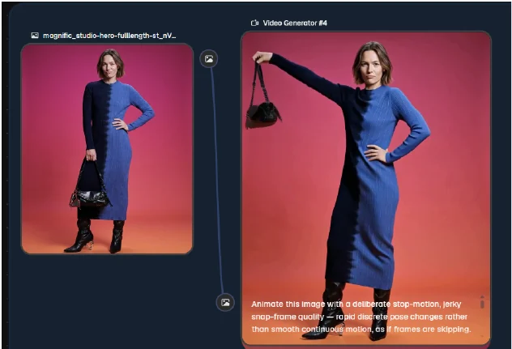
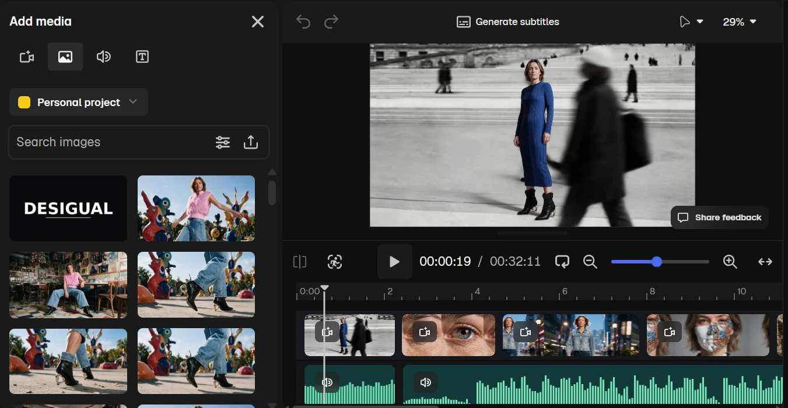
Tip: start in low resolution and upscale only when you like the result. Always check a model's reference-image limit before you connect your assets.
Workflow 3: one asset, many formats and languages.
A campaign needs the same visual in many sizes and markets. I built this so that all variations come out at once, without editing them one by one.
Image editor
Upload the image, choose an aspect ratio, and it fills the gap and adapts to the new size.
List node
Upload the right-size images and the text for each language.
Designer node
Build the composition once. All variations are ready when you hit done.
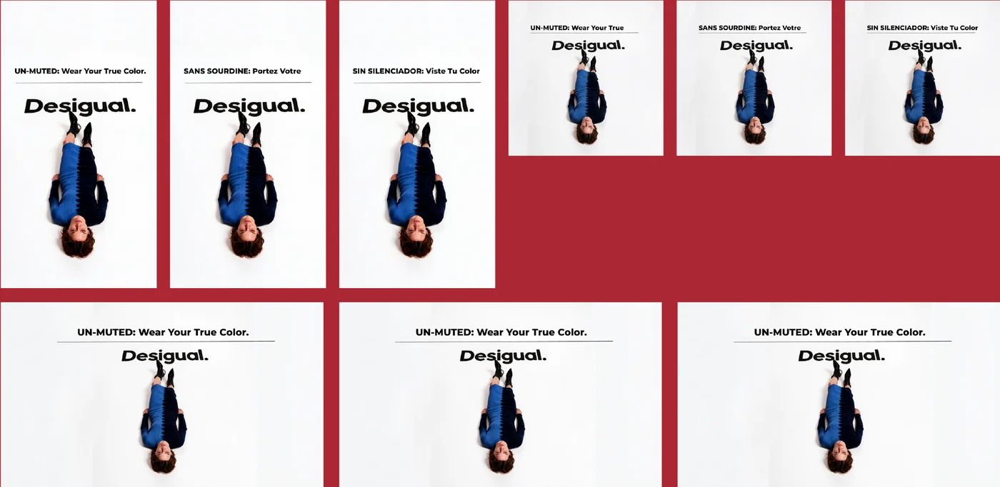
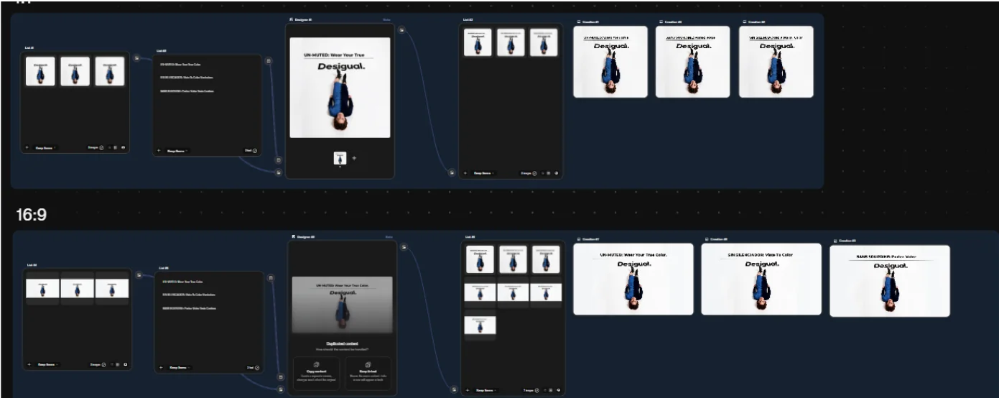
Tip: always make sure your image list and your content list have the same number of items.
One video, many languages.
A user-generated-style video with multilingual lip-sync. I generate the base video once, then re-lip-sync it for each language, with no new shoot. Below are the English and French versions. I lock a character reference for recurring talent.
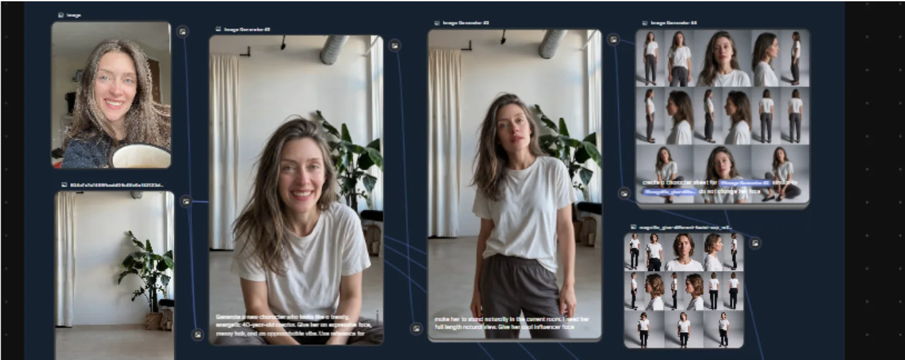
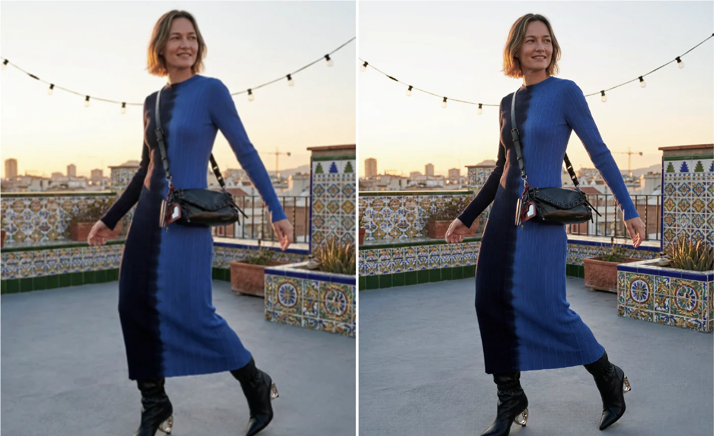
What I learned.
- Lock the character first. Consistency is the whole campaign.
- Build the workflow once, so results are repeatable and not lucky.
- Start low-res. Upscale at the end.
- Check limits early: each model accepts a different number of reference images.
- Keep the edit in an editor built for it. Fine control of sequence matters more than speed.
I'm open to AI creative technologist, forward deployed creative and AI product design roles, and to collaborations.
Get in touchOr email me directly at gulnar.rza.e@gmail.com